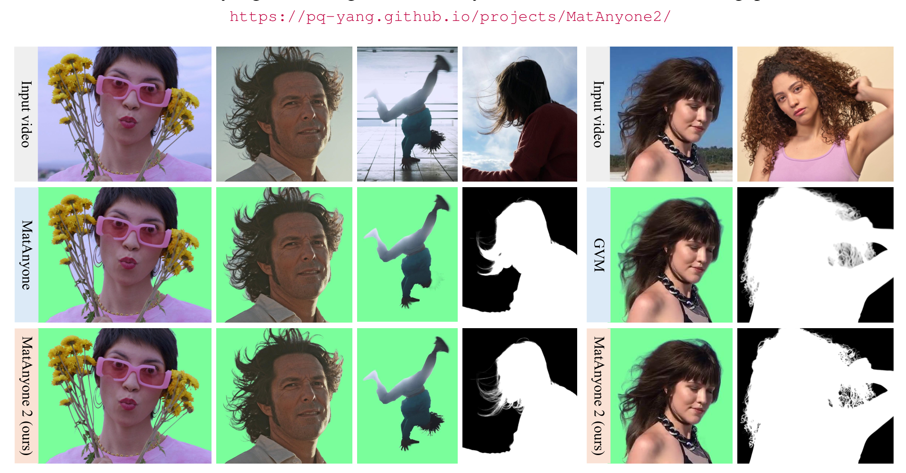
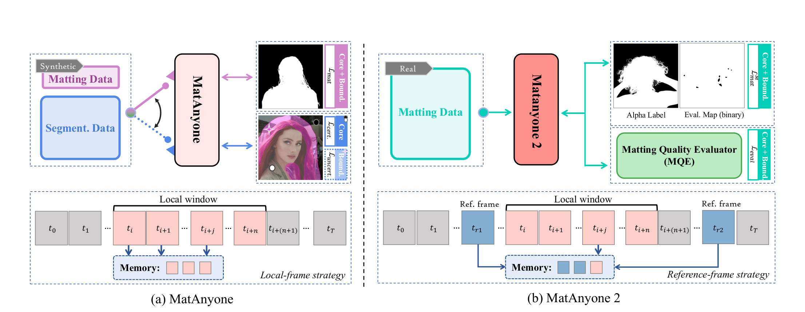
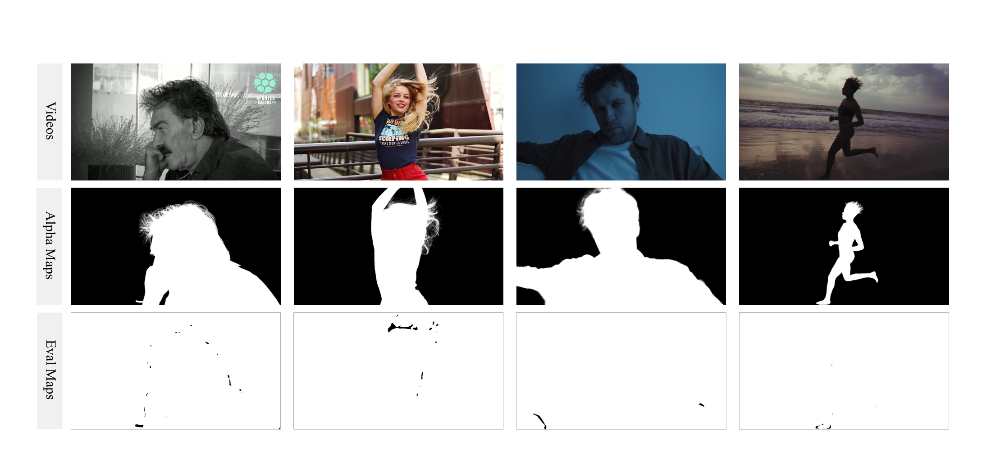
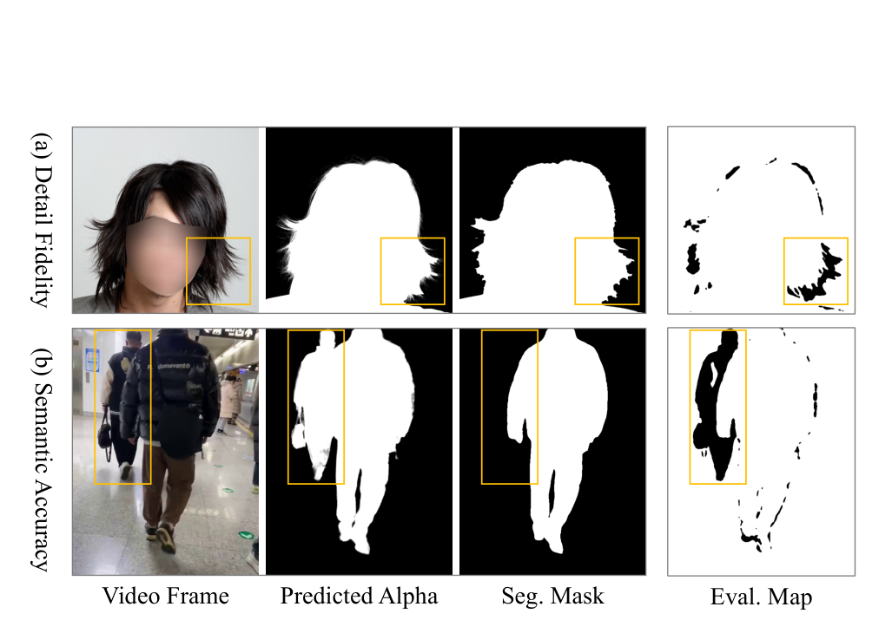
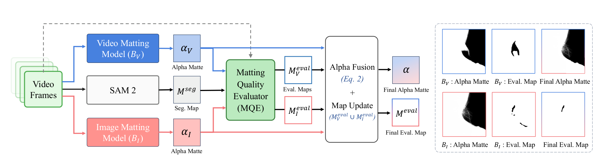
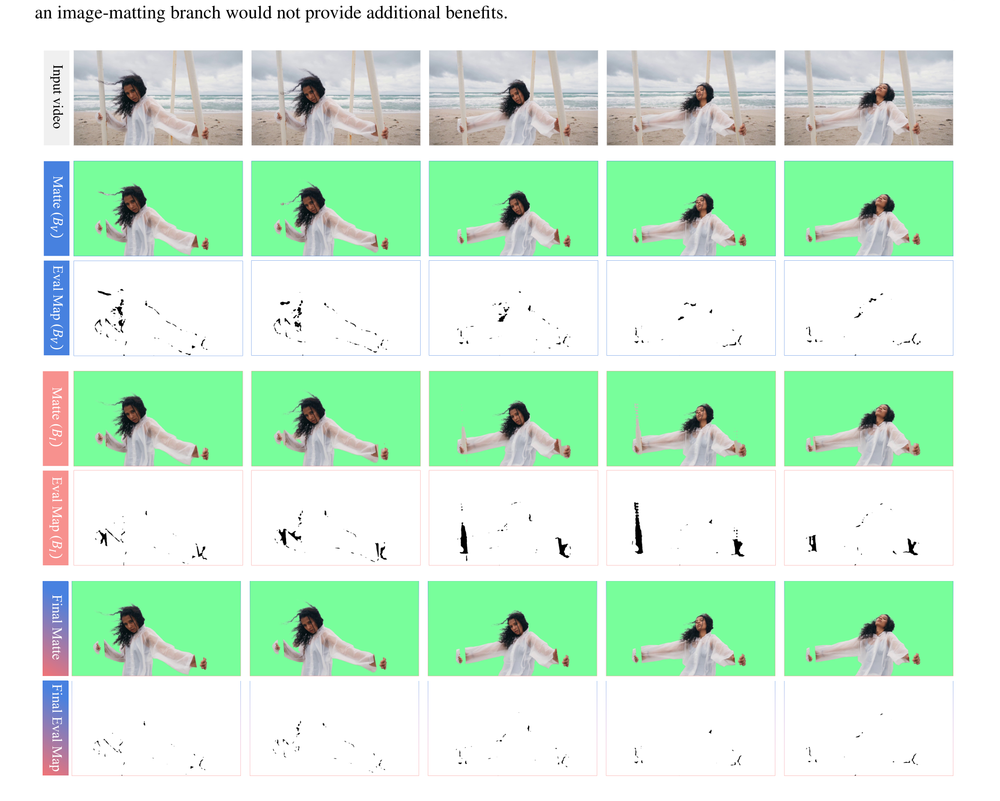
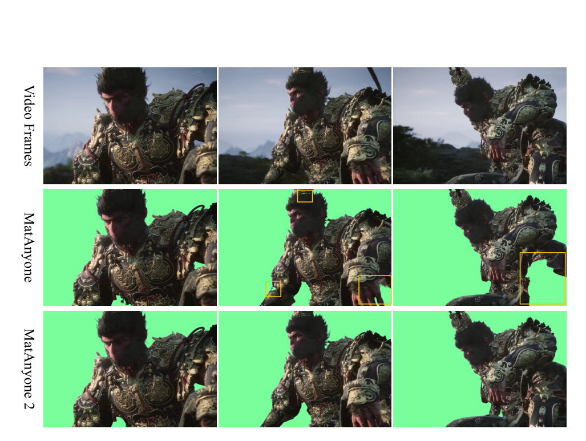
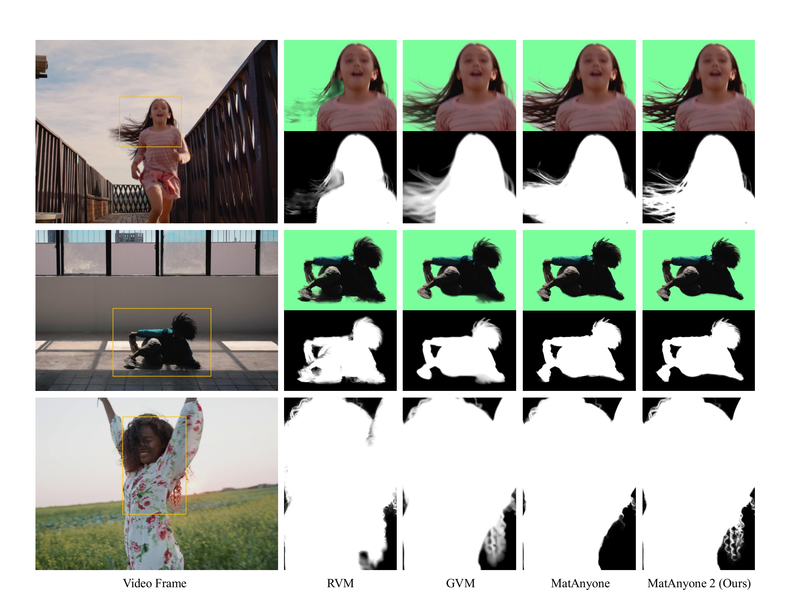
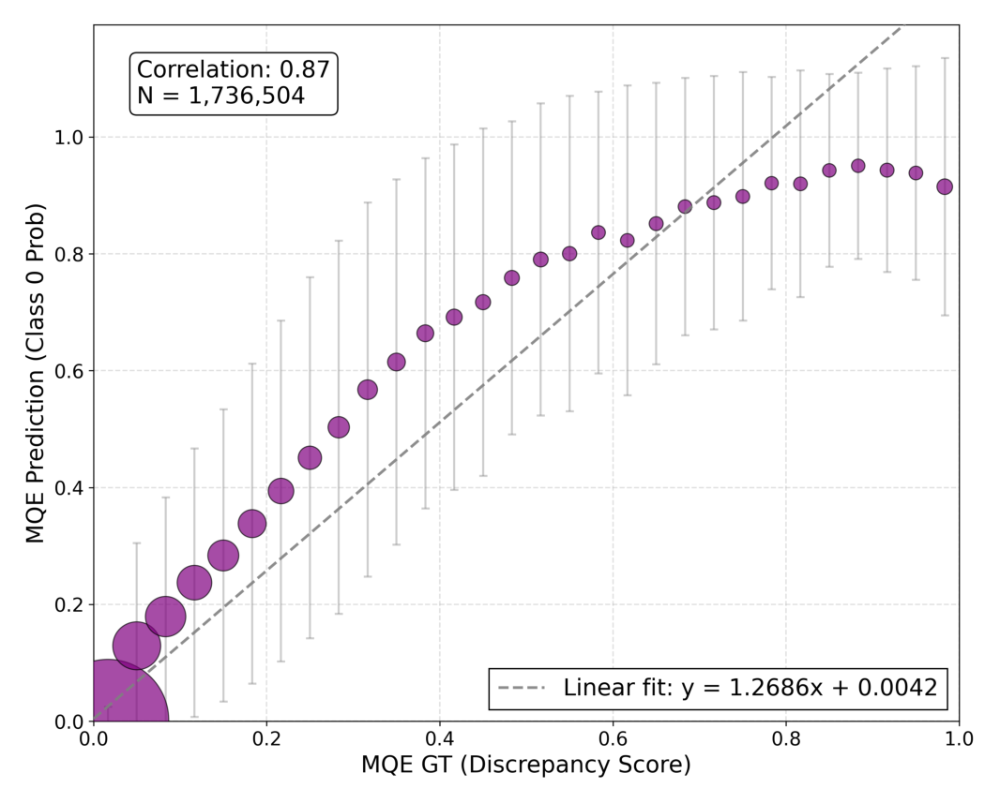
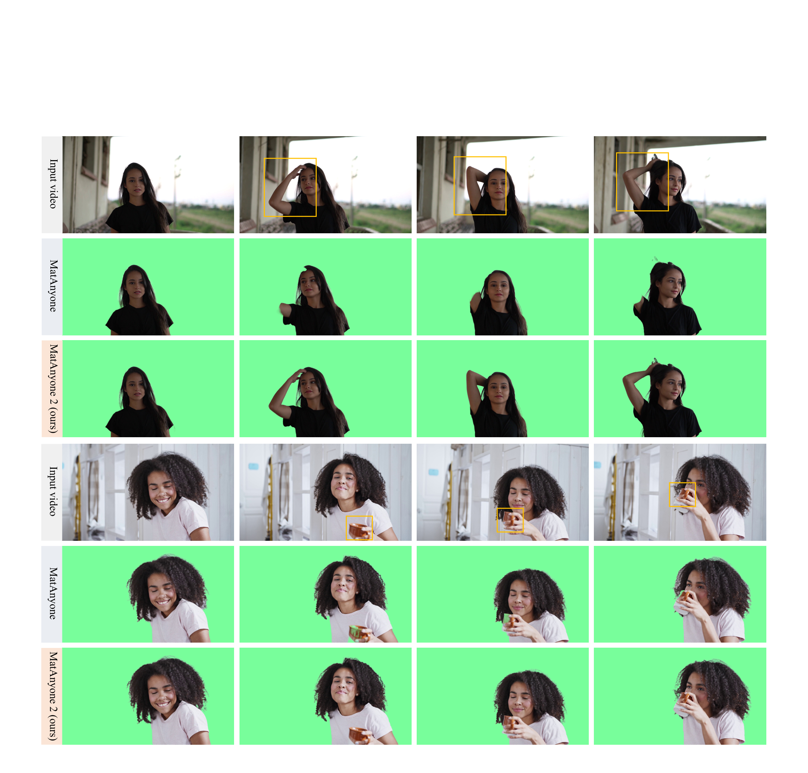

MatAnyone 2: can a learned quality evaluator replace missing alpha labels?
The short version. Video matting estimates an alpha matte, a per-pixel opacity map that keeps hair, motion blur, and semi-transparent boundaries instead of reducing the subject to a hard segmentation mask. MatAnyone 2 starts from a data problem: real videos rarely have frame-by-frame alpha ground truth, while synthetic foreground-background composites leave a domain gap. The paper's answer is a Matting Quality Evaluator (MQE), a learned pixel classifier that predicts which alpha pixels are reliable and which are erroneous without seeing ground-truth alpha at training time for those videos. The same MQE is used twice: online, it supplies an error penalty during model training; offline, it arbitrates between a temporally stable video-matting branch and a sharper image-matting branch to build VMReal, a real-world dataset with 28K clips and 2.4M frames. A reference-frame training strategy then gives the propagation model long-range memory for newly appearing arms, clothing regions, or handheld objects without extending the full local training window. In the paper's tables, MatAnyone 2 has the best point estimate on every listed metric across the four synthetic benchmark groups and on the real CRGNN benchmark — though the paper reports no standard errors, so a few of those margins (for example a 0.01 Grad gap on YouTubeMatte 512) are point estimates, not established wins. The main caveat is not hidden in the numbers: the annotation pipeline is bounded by the image/video matting models and Segment Anything Model 2 (SAM 2) masks it uses, and the PDF does not state whether VMReal itself is released.
{kind=link}

1. Motivation: where does supervision come from when alpha is missing?
Alpha matting is stricter than segmentation. A segmentation mask asks whether a pixel belongs to the subject. An alpha matte asks how much of that pixel belongs to the subject. Hair, transparent cloth, and motion blur live in the values between 0 and 1, so a binary mask cannot supervise the most important part of the task.
That is why the data problem dominates the paper. Synthetic video-matting datasets can composite foregrounds over random backgrounds, but the paper argues that lighting mismatch and unnatural boundaries hurt generalization. Segmentation data is much larger, especially through video object segmentation (VOS) sources such as the SA-V dataset used by SAM 2, but segmentation only gives reliable labels in non-boundary regions where alpha is exactly 0 or 1.
Q: If segmentation labels are large and stable, why not keep using them for video matting?
Guide: look at the boundary pixels first. In those pixels, a segmentation mask has already thrown away the continuous alpha value that matting needs.
A: Segmentation can teach the model where the person is, but it cannot teach how hair fades into the background. MatAnyone used segmentation supervision for core regions and a weak unsupervised boundary loss for the uncertain boundary. That improves tracking and semantics, but the boundary can drift toward a hard mask. MatAnyone 2 changes the source of supervision: instead of asking segmentation for alpha, it asks MQE whether a predicted alpha pixel is trustworthy.
Takeaway: The paper is not mainly a new backbone story. It is a supervision story: learn a judge for alpha quality, then use that judge where alpha labels are unavailable.
2. Contributions: what the paper actually adds
The authors state three contributions. First, they introduce a learned Matting Quality Evaluator that assesses semantic accuracy and boundary detail without ground-truth alpha for the target video. Second, they use MQE to build VMReal, a large real-world video-matting dataset with about 28K clips and 2.4M annotated frames. Third, they add a reference-frame strategy that stores long-range frames beyond the local training window, so the model can handle large appearance changes in long videos without the memory cost of training on much longer clips.
The stronger reader-level interpretation is that MQE turns quality assessment into a reusable supervision source. Online, its error map pushes the matting model away from bad alpha predictions. Offline, the same evaluator chooses pixels from two imperfect annotators: a video branch with stable semantics and an image branch with sharper boundaries. The method is therefore strongest when the bottleneck is not network capacity but the lack of dense, real-video alpha supervision.
{kind=link}

3. Datasets: pseudo evaluation labels first, then VMReal
There are two dataset stories in the paper, and they should not be merged. The first is for training MQE itself. The authors use the portrait image matting dataset P3M-10k, where image alpha ground truth is available, and convert alpha errors into pseudo evaluation maps. The second is VMReal: after MQE is trained, it helps annotate unlabeled real videos at scale.
The pseudo-label construction is deliberately narrow. Each image is divided into non-overlapping 7 by 7 patches. A patch-level discrepancy score combines Mean Absolute Difference (MAD), which measures average alpha error, and Gradient error (Grad), which measures boundary-detail error. The score is min-max normalized to the range \([0,1]\), then thresholded at \(\delta=0.2\) to produce class 1 for reliable pixels and class 0 for erroneous pixels.
VMReal then uses two sources. A high-quality subset contains 4.5K clips collected from video-footage websites and YouTube at 1080p. The remaining clips come from a human-centric subset of SA-V, usually at 720p. Because SA-V masks can be partial, the paper reduces redundant masks and groups remaining masks into complete human masks using OWL-SAM with the text prompt "person."
| Dataset | VM108 | VideoMatte240K | VM800 | SynHairMan | VMReal (ours) |
|---|---|---|---|---|---|
| # clips | 108 | 484 | 826 | 200 | 28K |
| # frames | 92K | 240K | 320K | 18K | 2.4M |
| Realism | × | × | × | × | ✓ |
{kind=link}

Q: Is VMReal just a larger synthetic dataset?
A: No. The paper's distinction is realism plus reliability. VMReal uses real videos, and each sample is converted into the triplet \(\langle I_{\mathrm{rgb}},\alpha,M^{\mathrm{eval}}\rangle\). The alpha matte supplies the target, while the evaluation map says where that target should count.
Takeaway: The dataset scale matters because MQE makes noisy automatic labels usable, not because the paper assumes all automatic labels are correct.
4. Pipeline: MQE has two jobs, not one
MQE is trained as a binary segmentation model. Its input is \(\langle I_{\mathrm{rgb}},\hat{\alpha},M^{\mathrm{seg}}\rangle\): the RGB frame, a predicted alpha matte, and a segmentation mask. Its output is \(M^{\mathrm{eval}}\in\{0,1\}^{H\times W}\), where 1 marks reliable pixels and 0 marks erroneous pixels. The segmentation mask gives semantic cues in core regions; DINOv3, a pretrained self-supervised vision encoder, supplies high-quality visual features; the Dense Prediction Transformer (DPT) decoder turns those features into a pixel map.
{kind=link}

The online job is simple: MQE produces an error probability map for the current alpha prediction, and the model is penalized for high predicted error.
The offline job is more interesting. The video branch \(B_V\), instantiated by MatAnyone in the paper, is temporally stable but can miss hair details. The image branch \(B_I\), instantiated by MattePro guided by per-frame SAM 2 masks, is sharper but less temporally stable. MQE evaluates both branches and defines a fusion mask for the pixels where \(B_V\) is unreliable and \(B_I\) is reliable.
{kind=link}

{kind=link}

Q: Why not use the sharper image branch directly?
A: Because sharp single-frame matting is not the same as stable video matting. The branch comparison in Supplementary Table 5 shows that \(B_I\) is worse than \(B_V\) on every listed VideoMatte metric. It supplies useful boundary pixels, but it is not reliable enough to be the base sequence.
Takeaway: The data pipeline works because it assigns each branch a limited role: \(B_V\) anchors time and semantics; \(B_I\) contributes local detail only when MQE says it is safe.
5. Method: the losses only trust reliable pixels
Once VMReal provides \(\langle I_{\mathrm{rgb}},\alpha,M^{\mathrm{eval}}\rangle\), the matting model no longer needs separate losses for matting and segmentation data types. It trains on a unified triplet. The reliability map decides where the target alpha is trusted.
For frame \(t\), let \(R_t=\mathbb{I}(M_t^{\mathrm{eval}}=1)\) be the reliable-pixel mask. The masked \(L_1\) loss supervises semantic alpha accuracy only where \(R_t\) is reliable.
The Laplacian pyramid loss does the same for detail, over five scales. The paper prints it as a weighted multi-scale sum with weight \(2^{s-1}/5\).
Temporal coherence is masked even more strictly: a pixel must be reliable in two consecutive frames. Let \(R_t^{\mathrm{tc}}=R_t\odot R_{t-1}\), \(\Delta\hat{\alpha}_t=\hat{\alpha}_t-\hat{\alpha}_{t-1}\), and \(\Delta\alpha_t=\alpha_t-\alpha_{t-1}\).
The reference-frame strategy addresses a separate failure. A propagation model trained on short 8-frame clips sees only local memory, so a long video can reveal body or clothing parts that were absent from earlier frames. MatAnyone 2 samples long-range reference frames into memory beyond the local window. The supplement adds random dropout on reference frames: 0 to 3 patches from boundary regions and 0 to 1 patches from non-boundary regions, with patch side length in \([50,100]\), are zeroed in both RGB and alpha. This augmentation forces the model to recover from missing or newly visible regions instead of over-trusting history.
{kind=link}

Q: What is the smallest model of the method?
A: Treat every alpha target as partly trusted. MQE tells the loss where the target is trustworthy. The masked losses learn from those pixels, the online MQE loss discourages new errors, and the fusion rule improves future targets by replacing only the pixels where the video branch fails and the image branch succeeds.
Takeaway: The method is a closed supervision loop, but not a blind one: every step is gated by a reliability map.
6. Training: what the PDF discloses
The paper covers enough training detail to describe the setup, but not enough to compute a credible total training bill. Both the video matting model and MQE are trained on 8 A800-80G GPUs with batch size 16. The matting clips are cropped to 480 by 480 pixels and contain 8 frames. MQE is trained for 80K iterations with learning rate \(3\times10^{-6}\) for the DINOv3 encoder and 10 times that rate for the DPT decoder.
| Item | Video matting model | Matting Quality Evaluator (MQE) |
|---|---|---|
| Hardware | 8 A800-80G GPUs | 8 A800-80G GPUs |
| Batch size | 16 | 16 |
| Input crop / sequence | 480 by 480, 8 frames | P3M-10k image matting samples |
| Backbone / decoder | MatAnyone backbone | DINOv3 encoder plus DPT decoder |
| Iterations | Not stated in the paper. | 80K iterations |
| Learning rate | Not stated in the paper. | \(3\times10^{-6}\) encoder; decoder 10 times larger |
| Key loss settings | \(\mathcal{L}_{\mathrm{eval}}\) weight 0.1 | Focal loss \(\gamma=2\), \(\alpha=0.25\); threshold \(\delta=0.2\) |
Because the matting model's total iterations and wall-clock time are not stated, any GPU-hour number would be a rough estimate from disclosed hardware only, not an actual bill. The more important reproduction boundary is data: the PDF describes how VMReal is constructed, but it does not state whether the dataset is publicly released.
7. Experiments: do the tables support the claim?
The paper uses five standard video-matting metrics. Mean Absolute Difference (MAD) and Mean Squared Error (MSE) measure semantic alpha error. Gradient error (Grad) measures boundary detail. dtSSD (the Sum of Squared Differences between consecutive frames) measures temporal flicker. Connectivity error (Conn) measures perceptual connectedness of the matte. Lower is better for all five. The paper does not report standard errors, so close gaps should be read as point estimates.
7.1 Synthetic benchmarks
Table 1 is the broadest comparison. GVM* is marked in the paper as a diffusion-based method using Stable Video Diffusion priors. MaGGIe† is marked as requiring an instance mask for each frame, while MatAnyone 2 requires the mask only in the first frame. Under those input conditions, MatAnyone 2 is best on every listed metric in this table.
| Benchmark / metric | MODNet | RVM | RVM-Large | GVM* | AdaM | FTP-VM | MaGGIe† | MatAnyone | Ours |
|---|---|---|---|---|---|---|---|---|---|
| VideoMatte 512 | MAD | 9.41 | 6.08 | 5.32 | 6.39 | 5.30 | 6.13 | 5.49 | 5.15 | 4.73 |
| VideoMatte 512 | MSE | 4.30 | 1.47 | 0.62 | 1.82 | 0.78 | 1.31 | 0.60 | 0.93 | 0.55 |
| VideoMatte 512 | Grad | 1.89 | 0.88 | 0.59 | 0.72 | 0.72 | 1.14 | 0.57 | 0.67 | 0.51 |
| VideoMatte 512 | dtSSD | 2.23 | 1.36 | 1.24 | 1.27 | 1.33 | 1.60 | 1.39 | 1.18 | 1.12 |
| VideoMatte 512 | Conn | 0.81 | 0.41 | 0.30 | 0.43 | 0.30 | 0.41 | 0.31 | 0.26 | 0.20 |
| VideoMatte 1080 | MAD | 11.13 | 6.57 | 5.81 | 6.33 | 4.42 | 8.00 | 4.42 | 4.24 | 4.10 |
| VideoMatte 1080 | MSE | 5.54 | 1.93 | 0.97 | 2.08 | 0.39 | 3.24 | 0.40 | 0.33 | 0.28 |
| VideoMatte 1080 | Grad | 15.30 | 10.55 | 9.65 | 8.04 | 5.12 | 23.75 | 4.03 | 4.00 | 3.45 |
| VideoMatte 1080 | dtSSD | 3.08 | 1.90 | 1.78 | 1.59 | 1.39 | 2.37 | 1.31 | 1.19 | 1.15 |
| YouTubeMatte 512 | MAD | 19.37 | 4.08 | 3.36 | 3.30 | — | 3.08 | 3.54 | 2.72 | 2.30 |
| YouTubeMatte 512 | MSE | 16.21 | 1.97 | 1.04 | 1.52 | — | 1.29 | 1.23 | 1.01 | 0.78 |
| YouTubeMatte 512 | Grad | 2.05 | 1.34 | 1.03 | 0.79 | — | 1.16 | 1.10 | 0.97 | 0.78 |
| YouTubeMatte 512 | dtSSD | 2.79 | 1.81 | 1.62 | 1.52 | — | 1.83 | 1.88 | 1.60 | 1.45 |
| YouTubeMatte 512 | Conn | 2.68 | 0.60 | 0.50 | 0.44 | — | 0.41 | 0.49 | 0.39 | 0.32 |
| YouTubeMatte 1080 | MAD | 15.29 | 4.37 | 3.58 | 2.68 | — | 6.49 | 2.37 | 1.99 | 1.61 |
| YouTubeMatte 1080 | MSE | 12.68 | 2.25 | 1.23 | 1.34 | — | 4.58 | 0.98 | 0.71 | 0.50 |
| YouTubeMatte 1080 | Grad | 8.42 | 15.10 | 12.97 | 8.38 | — | 29.78 | 7.69 | 8.91 | 7.14 |
| YouTubeMatte 1080 | dtSSD | 2.74 | 2.28 | 2.04 | 1.72 | — | 2.41 | 1.77 | 1.65 | 1.53 |
The cleanest like-for-like comparison is against MatAnyone, because both are mask-guided propagation methods and the new method is explicitly built from that predecessor. On YouTubeMatte 1080p, MAD improves from 1.99 to 1.61 and MSE from 0.71 to 0.50. The Grad comparison is also favorable, 8.91 to 7.14 in Table 1; the ablation table reports 7.13 under its slightly different setup, a rounding-level difference that lands at the same improvement over MatAnyone's 8.91.
7.2 Real CRGNN benchmark
The real CRGNN benchmark contains 19 videos with alpha mattes manually annotated every 10 frames. This table is important because it tests whether the real-data pipeline generalizes beyond synthetic composites.
| Method | MAD | MSE | Grad | dtSSD |
|---|---|---|---|---|
| RVM | 5.98 | 2.79 | 13.68 | 5.36 |
| RVM-Large | 5.75 | 2.47 | 13.26 | 5.17 |
| GVM | 5.03 | 2.15 | 14.28 | 4.86 |
| FTP-VM | 6.64 | 3.54 | 15.10 | 5.98 |
| MaGGIe | 9.50 | 6.11 | 16.51 | 6.02 |
| MatAnyone | 5.76 | 3.04 | 15.55 | 5.44 |
| Ours | 4.24 | 2.00 | 11.74 | 4.54 |
Against MatAnyone on the same benchmark, Grad falls from 15.55 to 11.74 and dtSSD from 5.44 to 4.54. Against GVM, which uses a diffusion prior, MatAnyone 2 still has lower MAD, MSE, Grad, and dtSSD. This supports the paper's claim that the gain is not just a stronger prior; it appears in real video evaluation where boundary detail and temporal stability both matter.
{kind=link}

7.3 Real videos without ground-truth alpha
The supplement also reports a real-world benchmark without ground-truth alpha. The left side uses semantic core-region metrics with SAM 2 masks as pseudo ground truth. The right side uses MQE-derived percentages: Error Region Ratio (ERR) is the percentage of all frame pixels flagged unreliable, Matte Error Ratio (MER) is the percentage of foreground-region pixels flagged unreliable, and Boundary Error Ratio (BER) is the percentage of boundary-band pixels flagged unreliable.
| Method | MAD | MSE | dtSSD | ERR (%) | MER (%) | BER (%) |
|---|---|---|---|---|---|---|
| MODNet | 16.47 | 14.68 | 3.16 | 2.31 | 2.20 | 27.11 |
| RVM | 1.71 | 1.30 | 1.39 | 1.05 | 2.34 | 25.45 |
| RVM-Large | 1.02 | 0.57 | 1.28 | 1.04 | 2.48 | 26.61 |
| GVM | 10.65 | 10.35 | 1.26 | 1.31 | 1.81 | 24.53 |
| FTP-VM | 2.89 | 2.29 | 1.63 | 1.43 | 4.06 | 30.76 |
| MaGGIe | 1.89 | 1.48 | 1.63 | 0.98 | 2.23 | 22.06 |
| MatAnyone | 0.19 | 0.13 | 1.08 | 0.62 | 1.69 | 20.23 |
| MatAnyone 2 | 0.19 | 0.13 | 0.99 | 0.46 | 1.13 | 15.19 |
How to read it: MatAnyone and MatAnyone 2 tie on the pseudo-ground-truth core metrics, MAD 0.19 and MSE 0.13. The difference is temporal and boundary quality. MatAnyone 2 lowers dtSSD from 1.08 to 0.99, and its BER means 15.19% of boundary-band pixels are flagged unreliable versus 20.23% for MatAnyone. Because ERR, MER, and BER are produced by MQE itself, this table is useful as a no-reference indicator, not as an independent ground-truth verdict.
8. Ablations: do the pieces explain the result?
8.1 Add the three pieces one at a time
The main ablation starts with MatAnyone, then adds online guidance \(\mathcal{L}_{\mathrm{eval}}\), VMReal, and reference-frame training. The setup is YouTubeMatte at 1920 by 1080 resolution.
| Exp. | \(\mathcal{L}_{\mathrm{eval}}\) | VMReal | Ref. Train | MAD | MSE | Grad | dtSSD |
|---|---|---|---|---|---|---|---|
| (a) | 1.99 | 0.71 | 8.91 | 1.65 | |||
| (b) | ✓ | 1.90 | 0.62 | 8.20 | 1.63 | ||
| (c) | ✓ | ✓ | 1.76 | 0.61 | 7.65 | 1.54 | |
| (d) | ✓ | ✓ | ✓ | 1.61 | 0.50 | 7.13 | 1.53 |
The sequence matches the mechanism. Adding \(\mathcal{L}_{\mathrm{eval}}\) improves semantic metrics and boundary detail: MAD 1.99 to 1.90, MSE 0.71 to 0.62, and Grad 8.91 to 8.20. Adding VMReal improves all four listed metrics again. Reference-frame training gives the final gain, especially in MAD and MSE, which fits the claim that long-range memory helps newly visible semantic regions.
8.2 The image branch is sharp, but not stable enough
Supplementary Table 5 is the counterexample that justifies the dual-branch design. The image branch uses SAM 2 plus MattePro. It is not safe to use directly as the video annotation base.
| Method | 512 MAD | 512 MSE | 512 Grad | 512 dtSSD | 512 Conn | 1080 MAD | 1080 MSE | 1080 Grad | 1080 dtSSD |
|---|---|---|---|---|---|---|---|---|---|
| \(B_I\) (SAM 2 + MattePro) | 8.96 | 2.38 | 2.02 | 2.36 | 0.68 | 5.01 | 0.67 | 5.97 | 2.24 |
| \(B_V\) (MatAnyone) | 5.15 | 0.93 | 0.67 | 1.18 | 0.26 | 4.24 | 0.33 | 4.00 | 1.19 |
The numbers are one-sided. At 512 resolution, the image branch has MAD 8.96 and dtSSD 2.36, while the video branch has MAD 5.15 and dtSSD 1.18. That is why the fusion rule starts from \(B_V\) and imports details from \(B_I\) only where MQE marks them reliable.
8.3 VMReal also improves a different model
Supplementary Table 6 trains Robust Video Matting (RVM) with and without VMReal. This tests whether the dataset is only tuned to MatAnyone 2's backbone.
| Method | 512 MAD | 512 MSE | 512 Grad | 512 dtSSD | 512 Conn | 1080 MAD | 1080 MSE | 1080 Grad | 1080 dtSSD |
|---|---|---|---|---|---|---|---|---|---|
| RVM (w/o VMReal) | 4.08 | 1.97 | 1.34 | 1.81 | 0.60 | 4.27 | 2.25 | 15.10 | 2.28 |
| RVM (w/ VMReal) | 3.32 (-0.76) | 1.34 (-0.63) | 1.20 (-0.14) | 1.79 (-0.02) | 0.49 (-0.11) | 3.37 (-0.9) | 1.51 (-0.74) | 14.40 (-0.70) | 2.22 (-0.06) |
| MatAnyone 2 | 2.30 | 0.78 | 0.78 | 1.45 | 0.32 | 1.61 | 0.50 | 7.13 | 1.53 |
RVM improves in every listed column after VMReal is added. That does not prove VMReal is flawless, but it weakens the alternative explanation that the dataset only helps the authors' own model.
8.4 MQE calibration is the foundation
MQE must correlate with real alpha discrepancy for the whole system to work. The supplement groups 1,736,504 patches into 30 bins by ground-truth discrepancy and averages MQE's predicted class-0 probability. The resulting curve has Pearson correlation \(r=0.87\). In the low-to-mid discrepancy range \(D(\cdot)\lt 0.5\), the response is roughly linear. For \(D(\cdot)\gt 0.5\), it saturates toward 1.0, which the authors interpret as conservative error marking.
{kind=link}

Q: Which ablation best supports the mechanism?
A: The mechanism needs three facts to be true. Table 3 shows the online loss, VMReal, and reference frames each improve the final model. Table 5 shows the image branch cannot be the base annotation branch. Figure 9 shows MQE's error prediction rises with ground-truth discrepancy. Together, those facts support the pipeline more strongly than any single leaderboard row.
Takeaway: The paper's strongest evidence is not only that MatAnyone 2 wins; it is that the proposed reliability map explains why the data and loss design should work.
9. Limitations: where the result should stop
| Boundary | Paper evidence | How to read it |
|---|---|---|
| Annotation ceiling | The limitations section says the VMReal pipeline remains bounded by the performance of the image and video matting models it combines. | MQE can select and fuse available predictions, but systematic errors from \(B_V\), \(B_I\), SAM 2, or MattePro can propagate into the dataset. |
| Human-centric scope | VMReal is built from human-centric videos, and examples focus on people, hair, clothing, and handheld objects. | The paper does not establish performance on animals, smoke, glass, transparent objects, or non-human matting. |
| MQE saturation | For \(D(\cdot)\gt 0.5\), MQE prediction saturates toward 1.0. | The evaluator becomes conservative in severe-error regions. That helps avoid missed errors, but it reduces resolution among very bad patches. |
| No-reference metric circularity | ERR, MER, and BER in Table 7 are computed from MQE's own evaluation maps. | Those percentages are useful trend indicators when alpha labels are missing, but they are not independent human or ground-truth evaluation. |
| Dataset availability | The PDF describes VMReal construction and scale but does not state whether VMReal is publicly released. | If VMReal is unavailable, reproducing the central data contribution is materially harder than rerunning a model architecture. |
| Compute disclosure | The PDF states GPU type/count and batch size, but not matting-model iterations, learning rate, wall-clock time, or total GPU-hours. | The training setup is only partially auditable from the paper alone. |
| Future work | The limitations section proposes an iterative data-model refinement flywheel and says it would require considerable engineering and compute. | The current paper is a single-pass scalable annotation pipeline, not a closed-loop data refinement system. |
{kind=link}

Q: What would be the easiest overclaim?
A: "MQE solves real-video matting labels." The paper supports a narrower claim: MQE makes automatic real-video labels useful enough to train a stronger human video matting model, and the resulting model wins the listed benchmarks. The quality ceiling, human-centric scope, and dataset-release uncertainty remain real boundaries.
Takeaway: MatAnyone 2 is best read as a scalable supervision pipeline for human video matting, not as a universal alpha-label generator.
10. Summary: the useful mental model
In one sentence: MatAnyone 2 replaces missing real-video alpha supervision with a learned pixel-wise reliability signal, then uses that signal to train on trusted pixels, build VMReal, and handle long-range propagation failures.
Three takeaways
- MQE is the load-bearing object. It is trained from P3M-10k pseudo evaluation labels, validated by the \(r=0.87\) discrepancy correlation, and reused as both online guidance and offline annotation arbiter.
- VMReal is a reliability-aware dataset, not just a large dataset. The dataset's scale matters because every alpha target comes with an evaluation map that tells the loss where supervision is trusted.
- The strongest evidence is mechanism-aligned. The main tables show broad wins, while the ablations show why: online guidance improves the baseline, VMReal helps both MatAnyone 2 and RVM, and reference frames address newly appearing regions in long videos.
A good reading path through the paper is Figure 2 for the old-versus-new supervision structure, Figure 5 for the dual-branch annotation pipeline, Equations 7 to 11 for the masked losses, Table 3 for the additive ablation, and Figure 10 for MQE calibration.
Sources and figure provenance
- Peiqing Yang, Shangchen Zhou†, Kai Hao, Qingyi Tao. MatAnyone 2: Scaling Video Matting via a Learned Quality Evaluator. arXiv:2512.11782v2 [cs.CV], 16 Mar 2026. S-Lab, Nanyang Technological University; SenseTime Research, Singapore. †Project lead, as marked in the PDF.
- All formulas, tables, dataset sizes, training settings, and numerical comparisons in this page are taken from the local PDF text extracted from
cvpr2026-best-papers-digest/sources/matanyone2.pdf. Explanatory framing is reader interpretation from the paper, not an added external result. - Figure provenance: the embedded figures are existing local PNG assets under
assets/figures/matanyone2/. Page Figures 1, 2, 4, 5, 7, 8, and 9 correspond to paper Figures 1, 2, 4, 5, 7, 6, and 10 respectively. Page Figure 3 corresponds to paper Figure 8. Page Figure 6 corresponds to paper Figure 9. Page Figure 10 corresponds to paper Figure 12. All in-text figures are reused local PNGs, not re-extracted. - Method names and footnote markers follow the paper tables: GVM* is the diffusion-based video matting method using Stable Video Diffusion priors; MaGGIe† requires instance-mask guidance for each frame.